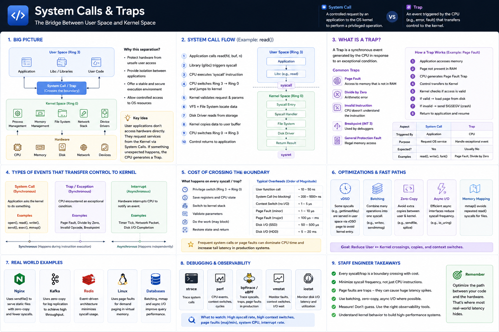

User Space Bridge • Mode Switch • Traps • Page Faults • Performance Optimization
Core Idea
Applications run in User Space with limited privileges. Hardware is controlled by the Kernel. Whenever an app needs a privileged operation it cannot do it directly — it asks the kernel through a System Call. The CPU switches from Ring 3 to Ring 0, does the work, and returns. If something unexpected happens — invalid memory access, divide by zero — the CPU generates a Trap and hands control to the kernel automatically.
System Call
A controlled request by the application to the OS kernel to perform a privileged operation. The app decides when to call it.
Trap
An event triggered by the CPU when something exceptional occurs during execution. The CPU decides — the app does not.
Why System Calls Exist
Applications must never be allowed to directly:
The kernel is the trusted manager that validates every request before touching hardware. No validation = no system.
Common System Calls
| Syscall | What It Does |
|---|---|
open() / close() | Open / close file descriptors |
read() / write() | File and socket I/O |
send() / recv() | Network send / receive |
fork() / exec() | Create / launch processes |
mmap() | Map memory / files into address space |
epoll_wait() | Async I/O event monitoring |
brk() / sbrk() | Expand heap memory |
ioctl() | Device-specific control |
gettimeofday() | Read system clock (vDSO fast path) |
System Call Flow — What Really Happens for read("data.txt")
What the CPU does during mode switch
This happens millions of times per second on busy production servers. Every transition has a cost.
Why System Calls Are Expensive — Typical Overhead
Unlike a normal function call (stays in User Space), a syscall pays for all of these:
If the operation blocks (disk or network), the scheduler may switch to another thread — adding milliseconds, not microseconds.
| Operation | Typical Cost |
|---|---|
| Normal function call | ~10–50 ns |
| Syscall (no I/O blocking) | ~200–1000 ns |
| Context switch | ~1–5 µs |
| Page fault (minor) | ~1–10 µs |
| Page fault (major) | ~100 µs – ms |
| Disk I/O (SSD) | ~50–500 µs |
| Disk I/O (HDD) | ~5–20 ms |
Frequent syscalls or page faults can dominate CPU time and drive up tail latency.
What is a Trap?
A Trap is a synchronous CPU-generated event that transfers control to the kernel because the current instruction caused an exceptional condition. The app did not ask for this — the CPU decided.
| Trap | Cause |
|---|---|
| Page Fault | Memory not loaded in RAM |
| Divide by Zero | Arithmetic error |
| Invalid Instruction | Unknown opcode executed |
| Breakpoint (INT 3) | Debugger breakpoint hit |
| General Protection Fault | Illegal memory access |
| Stack Overflow | Stack pointer out of bounds |
Syscall vs Trap vs Interrupt
| Type | Triggered By | Synchronous? |
|---|---|---|
| System Call | Application | Yes |
| Trap | CPU (exception) | Yes |
| Interrupt | Hardware device | No (async) |
Page Fault — The Most Common Trap
Page faults are how virtual memory works. Minor page faults (~1–10 µs) are normal. Major page faults requiring disk I/O can spike P99 latency by milliseconds.
Interrupt (Asynchronous)
Hardware events that arrive independently of the current instruction. The CPU pauses the running task, handles the interrupt, then resumes.
Optimization Techniques — Reducing Kernel Crossings
vDSO
Some syscalls (e.g. gettimeofday) run entirely in User Space — no kernel entry.
Batching
Combine many ops into one syscall. writev, sendmmsg — fewer crossings.
Zero-Copy
Skip the User Space buffer. sendfile(), splice() — fewer copies and syscalls.
Async I/O
io_uring — submit many I/O ops and collect completions with a single syscall pair.
mmap()
Map files directly into address space — avoids repeated read() syscalls on hot data.
Goal: Reduce User ↔ Kernel crossings, copies, and context switches. That's where most real-world latency hides.
Real-World Examples
| System | Technique | Why |
|---|---|---|
| Nginx | sendfile() | Serve static files with fewer syscalls + no user buffer |
| Kafka | Zero-copy APIs | Reduce CPU during log replication to consumers |
| Redis | Event-driven loop | Minimize syscalls; one epoll_wait for thousands of connections |
| Linux VM | Page fault traps | Implement demand paging — load pages only when accessed |
| Databases | mmap + io_uring | Async I/O improves query throughput |
Staff Engineer Decision Framework
| Scenario | Approach |
|---|---|
| Millions of tiny writes | writev — batch syscalls |
| Large file transfers | sendfile() — zero-copy |
| High I/O concurrency | io_uring — async submit/complete |
| Frequent page faults | Increase RAM or shrink working set |
| High system CPU % | Reduce unnecessary kernel crossings |
| Ultra-low latency networking | DPDK / RDMA — bypass kernel entirely |
Engineer Progression
Junior
"Why is my API slow?"
Staff
Optimizing syscall frequency often gives larger gains than optimizing application logic.
Debugging & Observability
When latency spikes, look for:
top / htop)vmstat)strace -c -p PID)vmstat pgmajfault)iostat)vmstat in col)| Tool | What It Shows |
|---|---|
strace | Every syscall made by a process |
perf stat | CPU events, context switches, cycles |
bpftrace / eBPF | Trace syscalls and traps in production |
vmstat | Context switches, page faults, I/O wait |
pidstat | Per-process user vs system CPU % |
Interview Cheat Sheet
Principal Engineer Takeaway
System Calls — controlled gateways for privileged kernel services. App-initiated.
Traps — CPU-generated on exceptions. Page faults are the most common and impactful.
Every boundary crossing — privilege change, register save, stack switch — costs CPU cycles.
Optimize with — batching, zero-copy, io_uring, vDSO, and eBPF measurement.
Staff Engineers optimize systems by minimizing unnecessary system calls, using batching, zero-copy, and async I/O — and by measuring kernel behavior with perf, strace, and eBPF rather than guessing. That's where most real-world latency hides.
